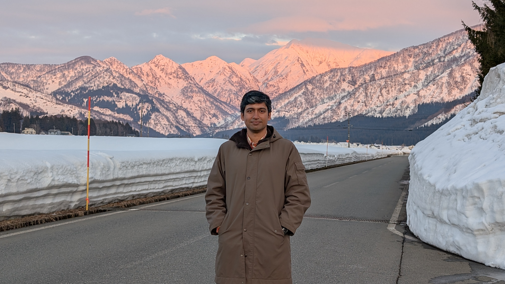

About Me
I am an Assistant Professor of Geography at the Directorate of Secondary and Higher Education under the Ministry of Education, Bangladesh. As a JDS Fellow, I completed my Master of Science in Environmental Science at the University of Tsukuba, Japan. My research bridges traditional geography and modern spatial data science, focusing on remote sensing, GIS, Earth observation, and disaster risk management.
Featured Research: National-Scale HRLULC Mapping
During my Master’s research at Tsukuba University, I gained vast knowledge in satellite data analysis and interpretation. Google Earth Engine and various Python libraries were used to analyze and interpret the data. Since the deep learning model (CNN) demanded a large volume of reference data—approximately 67,000 points and various indices—we accounted for six seasonal variations.

Reference Data Distribution across Bangladesh

HRLULC Maps of Bangladesh (2020 & 2023)
After completing this research, I became interested in the 'Prithvi-eo 2.0' model. However, the model demands high-resolution imagery, which requires significant research funding and equipment. I attempted to run the script on Google Colab using an A100 GPU, but it required a higher specification hardware configuration. Nevertheless, this initiative helped me develop my skills in running models on cloud computing platforms. My previous hands-on experience in satellite data analysis makes me confident to apply for the climate disaster project.
Selected Publications
- Sarker, M. M., Chakraborty, D., et al. (2025). The First National-Scale High-Resolution Land Use Land Cover Map of Bangladesh Using Multi-Temporal Optical and SAR Imagery. Earth, 6(4), 143. [DOI]
- Mondal, K. P., Islam, S. T., Sanyal, N., Shuvo, S. R. S., Mahmud, M. M., Chakraborty, D., ... & Jubaer, A. (2023). Engaging Youth in Flood Risk Management: A Citizen Science Geospatial Initiative in Bangladesh. 3rd International Symposium on Disaster Resilience and Sustainable Development (DRSD 2023) Proceedings, Springer Nature Singapore. [DOI]
- Chakraborty, D., Mondal, K. P., Talukdar, B. (2022). Health Impacts of Climate Change-Related Flash Flood: A Case from Bangladesh. In Trevor M. Letcher (Ed.), Living with Climate Change, Elsevier. [DOI]
- Chakraborty, D., Mondal, Key P., Islam, S. T., Roy, J. (2021). 2017 Flash Floods in Bangladesh: Lesson Learnt. In Pal, I., Shaw, R., Shrestha, S., Djalante, R. (Eds.), Disaster Resilience and Sustainability, Elsevier.
Honors & Awards
🏅 Outstanding Poster Presentation Recognition — ECRS 2026
Recognized for an outstanding poster presentation at the 6th International Electronic Conference on Remote Sensing (ECRS 2026), held online on 19–21 October 2026 (MDPI).

Certificate of Recognition — ECRS 2026
Professional Experience
| Position | Institution | Period |
|---|---|---|
| Assistant Professor (Geography) | Directorate of Secondary and Higher Education, Ministry of Education, Bangladesh | Nov 2025 – Present |
| Lecturer (Geography) | Directorate of Secondary and Higher Education, Ministry of Education, Bangladesh | Jun 2016 – Nov 2025 |
Education & Fellowships
| Degree | Institution | Details |
|---|---|---|
| MSc in Environmental Science | University of Tsukuba, Japan | JDS Fellow (2023–2025) |
| MBA in Finance & Banking | Jahangirnagar University, Bangladesh | 2012–2013 |
| MSc in Geography & Environment | Jahangirnagar University, Bangladesh | 2010–2011 |
| BSc (Honours) in Geography | Jahangirnagar University, Bangladesh | 2006–2010 |